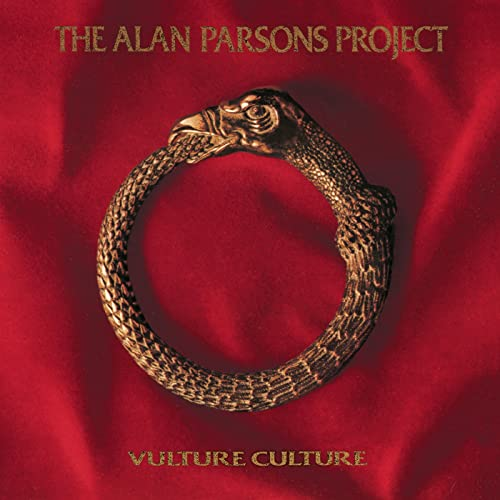
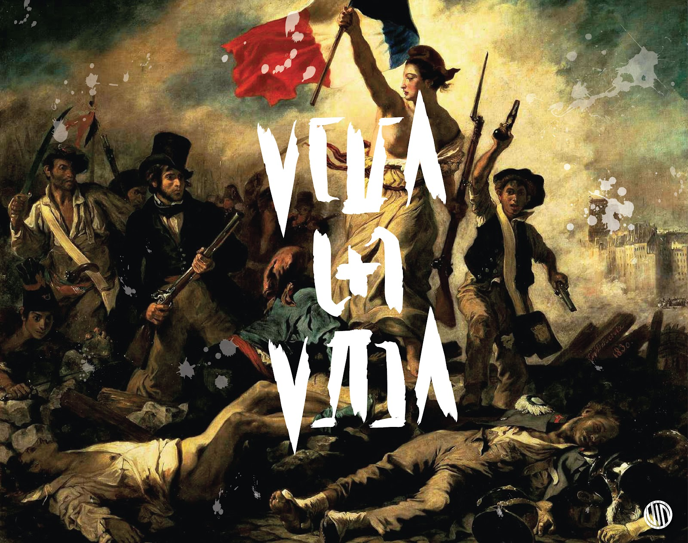
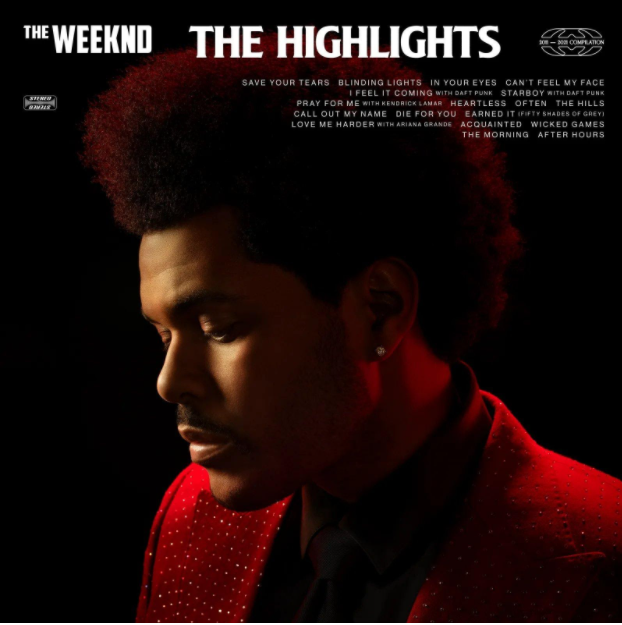

Days Are Numbers - The Alan Parsons Project

The traveller is always leaving town He never has the time to turn around And if the road he's taken isn't leading anywhere He seems to be completely unaware The traveller is always leaving home The only kind of life he's ever known When every moment seems to be a race against the time There's always one more mountain left to climb Days are numbers (days) Watch the stars (are numbers) We can only see so far Someday, you'll know where you are (know where you are) Remember, days are numbers (days) Count the stars (are numbers)
We can only go so far One day, you'll know where you are (know where you are) The traveller awaits the morning tide He doesn't know what's on the other side But something deep inside of him keeps telling him to go He hasn't found a reason…
The traveller is always leaving town He never has the time to turn around And if the road he's taken isn't leading anywhere He seems to be completely unaware The traveller is always leaving home The only kind of life he's ever known When every moment seems to be a race against the time There's always one more mountain left to climb Days are numbers (days) Watch the stars (are numbers) We can only see so far Someday, you'll know where you are (know where you are) Remember, days are numbers (days) Count the stars (are numbers)
We can only go so far One day, you'll know where you are (know where you are) The traveller awaits the morning tide He doesn't know what's on the other side But something deep inside of him keeps telling him to go He hasn't found a reason…
Viva la Vida - Coldplay

I used to rule the world Seas would rise when I gave the word Now in the morning, I sleep alone Sweep the streets I used to own I used to roll the dice Feel the fear in my enemy's eyes Listen as the crowd would sing Now the old king is dead, long live the king One minute I held the key Next the walls were closed on me And I discovered that my castles stand Upon pillars of salt and pillars of sand I hear Jerusalem bells are ringing Roman Cavalry choirs are singing Be my mirror, my sword and shield My missionaries in a foreign field For some reason I can't explain Once you go there was never, never an honest word And that was when I ruled the world It was a wicked and wild wind Blew down the doors to let me in Shattered windows and the sound of drums People…I used to rule the world Seas would rise when I gave the word Now in the morning, I sleep alone Sweep the streets I used to own I used to roll the dice Feel the fear in my enemy's eyes Listen as the crowd would sing Now the old king is dead, long live the king One minute I held the key Next the walls were closed on me And I discovered that my castles stand Upon pillars of salt and pillars of sand I hear Jerusalem bells are ringing Roman Cavalry choirs are singing Be my mirror, my sword and shield My missionaries in a foreign field For some reason I can't explain Once you go there was never, never an honest word And that was when I ruled the world It was a wicked and wild wind Blew down the doors to let me in Shattered windows and the sound of drums People…
Blinding Lights - The Weeknd

Yeah I've been tryin' to call I've been on my own for long enough Maybe you can show me how to love, maybe I'm going through withdrawals You don't even have to do too much You can turn me on with just a touch, baby I look around and Sin City's cold and empty (oh) No one's around to judge me (oh) I can't see clearly when you're gone And I said, ooh, I'm blinded by the lights No, I can't sleep until I feel your touch I said, ooh, I'm drowning in the night Oh, when I'm like this, you're the one I trust (Hey, hey, hey) I'm running out of time
'Cause I can see the sun light up the sky So I hit the road in overdrive, baby, oh The city's cold and empty (oh) No one's around to judge me (oh) I can't see clearly when you're gone And I said, ooh, I'm blinded by the lights… Yeah I've been tryin' to call I've been on my own for long enough Maybe you can show me how to love, maybe I'm going through withdrawals You don't even have to do too much You can turn me on with just a touch, baby I look around and Sin City's cold and empty (oh) No one's around to judge me (oh) I can't see clearly when you're gone And I said, ooh, I'm blinded by the lights No, I can't sleep until I feel your touch I said, ooh, I'm drowning in the night Oh, when I'm like this, you're the one I trust (Hey, hey, hey) I'm running out of time
'Cause I can see the sun light up the sky So I hit the road in overdrive, baby, oh The city's cold and empty (oh) No one's around to judge me (oh) I can't see clearly when you're gone And I said, ooh, I'm blinded by the lights…
Dynamite - BTS
 Cause I-I-I'm in the stars tonight So watch me bring the fire and set the night alight Shoes on, get up in the morn' Cup of milk, let's rock and roll King Kong, kick the drum, rolling on like a Rolling Stone Sing song when I'm walking home Jump up to the top, LeBron Ding dong, call me on my phone Ice tea and a game of ping pong, huh This is getting heavy Can you hear the bass boom? I'm ready (woo hoo) Life is sweet as honey Yeah, this beat cha-ching like money, huh Disco overload, I'm into that, I'm good to go I'm diamond, you know I glow up
Hey, so let's go 'Cause I-I-I'm in the stars tonight So watch me bring the fire and set the night alight (hey) Shining through the city with a little funk and soul So I'ma light it up like dynamite, whoa oh oh
Cause I-I-I'm in the stars tonight So watch me bring the fire and set the night alight Shoes on, get up in the morn' Cup of milk, let's rock and roll King Kong, kick the drum, rolling on like a Rolling Stone Sing song when I'm walking home Jump up to the top, LeBron Ding dong, call me on my phone Ice tea and a game of ping pong, huh This is getting heavy Can you hear the bass boom? I'm ready (woo hoo) Life is sweet as honey Yeah, this beat cha-ching like money, huh Disco overload, I'm into that, I'm good to go I'm diamond, you know I glow up
Hey, so let's go 'Cause I-I-I'm in the stars tonight So watch me bring the fire and set the night alight (hey) Shining through the city with a little funk and soul So I'ma light it up like dynamite, whoa oh oh
Cause I-I-I'm in the stars tonight So watch me bring the fire and set the night alight Shoes on, get up in the morn' Cup of milk, let's rock and roll King Kong, kick the drum, rolling on like a Rolling Stone Sing song when I'm walking home Jump up to the top, LeBron Ding dong, call me on my phone Ice tea and a game of ping pong, huh This is getting heavy Can you hear the bass boom? I'm ready (woo hoo) Life is sweet as honey Yeah, this beat cha-ching like money, huh Disco overload, I'm into that, I'm good to go I'm diamond, you know I glow up
Hey, so let's go 'Cause I-I-I'm in the stars tonight So watch me bring the fire and set the night alight (hey) Shining through the city with a little funk and soul So I'ma light it up like dynamite, whoa oh oh
Cause I-I-I'm in the stars tonight So watch me bring the fire and set the night alight Shoes on, get up in the morn' Cup of milk, let's rock and roll King Kong, kick the drum, rolling on like a Rolling Stone Sing song when I'm walking home Jump up to the top, LeBron Ding dong, call me on my phone Ice tea and a game of ping pong, huh This is getting heavy Can you hear the bass boom? I'm ready (woo hoo) Life is sweet as honey Yeah, this beat cha-ching like money, huh Disco overload, I'm into that, I'm good to go I'm diamond, you know I glow up
Hey, so let's go 'Cause I-I-I'm in the stars tonight So watch me bring the fire and set the night alight (hey) Shining through the city with a little funk and soul So I'ma light it up like dynamite, whoa oh oh
4 popsongs
Event Locations
Event Locations : Blue:hover,Red:click, Yellow:special